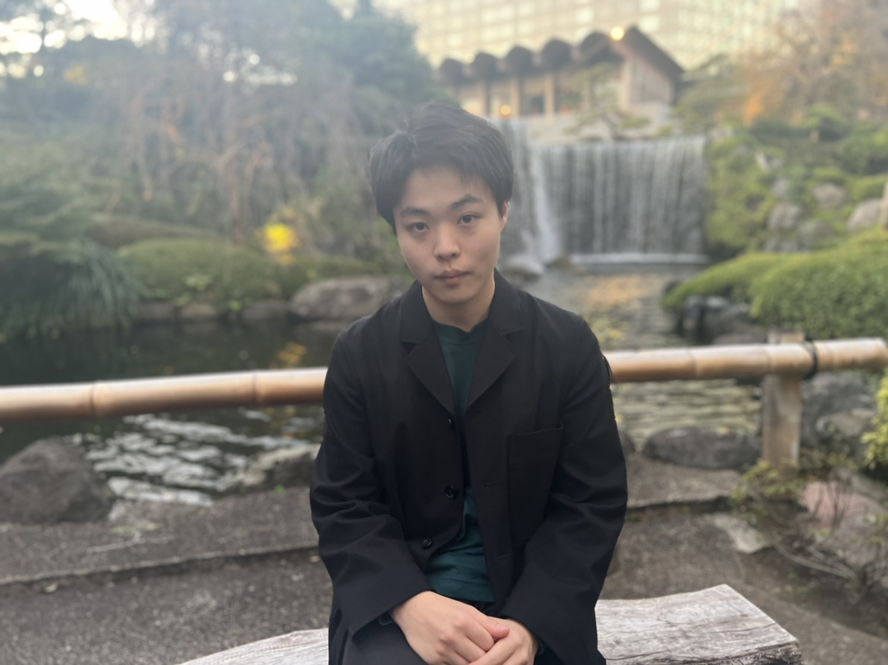

I am Hiroaki Murayama working on mathematical modelling of infectious disease dynamics, epidemiology, and control. I am also a medical student in School of Medicine, International University of Health and Welfare in Japan.
I started working on infectious disease epidemiology in 2019's summer. In 2020, I was invited as an Advisor in Ministry of Health, Labour, and Welfare, Japan, and have been engaged in ad-hoc analysis and research work to the COVID-19 epidemics under Prof. Hiroshi Nishiura in Kyoto University.
Since 2021, I have also worked with Dr. Shouto Yonekura as a Research Assistant in Chiba University and proposed a novel Bayesian framework to estimate variant-specific waning vaccine effectiveness in the presence of multi-varant circulation from population-level surveillance data. On the emergence of global outbreak of monkeypox across non-endemic regions in 2022, I worked on a research with Dr. Akira Endo and his colleagues in London School of Hygiene & Tropical Medicine.
My e-mail adress: hiromura319[at]gmail.com